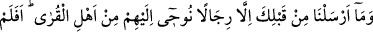
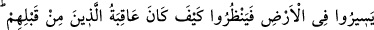
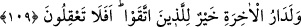

“Ben Kur’an okumakta lahn/hatâ yapıyorsam, sen de îmanda lahn yapıyorsun. Biz, iç
âlemimizi düzeltmeye çalıştığımız için mahluklar bizden korkuyor. Siz ise zahirle
uğraştığınız için korkan siz oluyorsunuz.”
Hikayeye göre Reşid’in oğlu bekayı fenâya tercih ettiğinden bir gün babası,
“Hükümdarların içinde beni utandırıyorsun.” diyerek onu ayıpladı.
Oğlu da bir kuşu çağırdı. Kuş yanına gelince haydi sen de çağır dedi. Babası çağırdı,
fakat kuş gelmedi. Bunun üzerine Reşid’in oğlu babasına:
“Allah dostlarının arasında ben de senden utanıyorum. Şüphem yok ki, sen dünyanın
esiri olmuşsun!’ dedi.
Basîret, kudsî bir nurla aydınlanan kalblerin bir kuvvesi olup kalbler bu kuvve
yardımıyla eşyanın gerçek ve asıl yüzlerini görürler. Tıpkı eşyanın sûretlerinin ve
görünüşlerinin kendisi vasıtasıyla görüldüğü gözler gibi. Filozofların el-akiletü’n-
nazariyye ve el-kuvvetü’l-kudsiyye dedikleri güç budur. Esasen bütün insanların
kalbleri, fıtratları gereği basîrete mütemayildir. Ne var ki lezzet ve şehvetlerle meşgul
olduğu, ibadet ve tâatlerden yüz çevirdiği için kararmışlardır. Belkıs, Fir’avn’ın
büyücüleri ve daha başkaları işte bu basiret ve ilâhî tevfik sayesinde îman etmişlerdir.
Bilesin ki büyük mutluluğun yolu ve kurtuluşun kapısı, Hz. Peygamber (s.a.)’e tâbi
olmaktır.
Sehl der ki: “Gerçek mânâda Allah’ı sevenler, hem söz, hem davranış, hem de
hâllerinde Rasûl-i Ekrem’e tâbi olanlardır.”
Hz. Üftâde (k.s.) anlatıyor: “Bir gün İbrahim Paşa Camii’nin imamı, beni rahatsız
etmek maksadıyla Sülemî’nin et-Te’vîlât’ını sordu. Ben de: “Onu bırakalım, biz bunun
ehli değiliz. Sizin niyetinizle sadece Mesnevî’yi açsak yeter.” dedim ve Mesnevî’yi
açtım. Bir de baktık karşımıza şu beyit çıktı:
Tarîkat-ı aliyye sâliklerinin yolu budur
Ki o yol şer‘î hükümlere riâyetle gider
Rahmetli (imam) buna şaşırdı ve bundan sonra evliyâullahı kötülemeyi bıraktı.”
109. “Senden önce de şehirler halkından kendilerine vahyettiğimiz erkeklerden